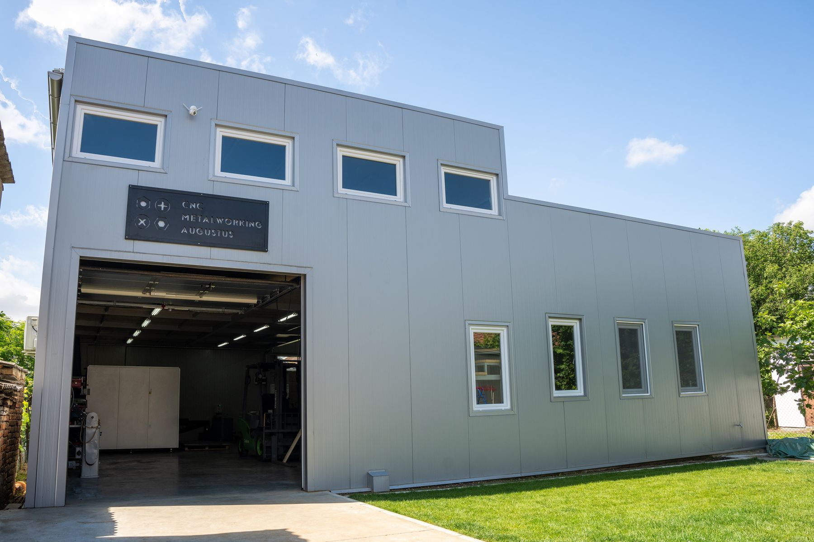

O nas
Rodzinna firma CNC z Mačvanskiej Mitrovicy w Serbii. Zaczynaliśmy od precyzyjnego toczenia, a dziś produkujemy automatyczne otwieracze do szklarni, które trafiają na cały świat.

Od detali toczonych do gotowego produktu
CNC Metalworking Augustus zaczynał jako warsztat toczenia precyzyjnego. Otwieracz wyrósł z tego doświadczenia: to produkt, w którym jakość toczonego cylindra decyduje, czy całość działa sezon po sezonie.
Dziś kompletny zestaw powstaje pod jednym dachem. Cylinder, mechanizm i elementy mocujące są toczone i montowane u nas, co utrzymuje stałą specyfikację i pozwala odpowiadać na pytania techniczne bezpośrednio.
Naszymi klientami są dystrybutorzy i producenci szklarni. Większość zaczynała od jednego zestawu próbnego we własnej szklarni.
Produkcja
Komponenty są toczone, montowane i kontrolowane w kilku nadzorowanych etapach. Produkujemy poza sezonem, aby zbudować zapas, i zwiększamy moce, gdy rośnie popyt. Prasy i maszyny pomocnicze obsługują cięcie, formowanie i wiercenie pozostałych komponentów.
Jakość
Używamy certyfikowanych europejskich materiałów i mierzymy tolerancje nowoczesnym sprzętem, dzięki czemu detale są zgodne sztuka do sztuki i partia do partii. Każdy zestaw jest sprawdzany przed pakowaniem, a nasz system zarządzania jakością posiada certyfikat ISO 9001. Próbki każdego produktu są dostępne na życzenie.

Chcesz zobaczyć, jak działa?
Zamów zestaw próbny i przetestuj go we własnej szklarni.